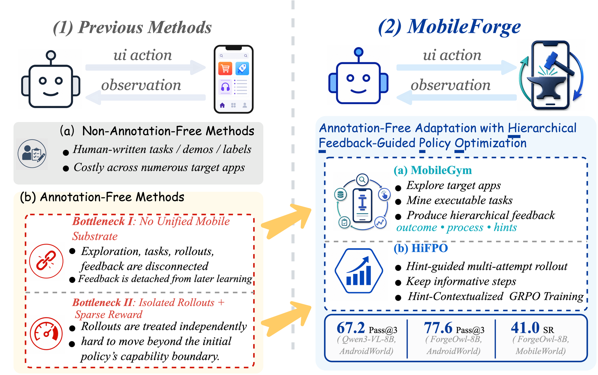
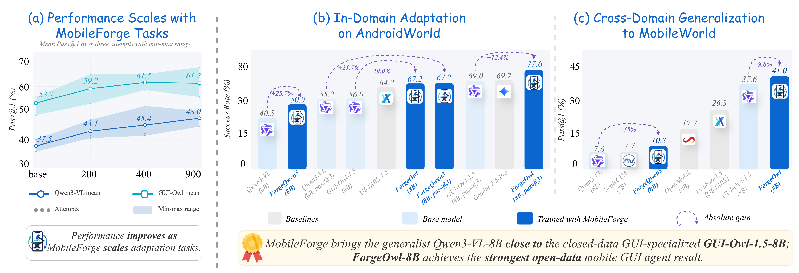
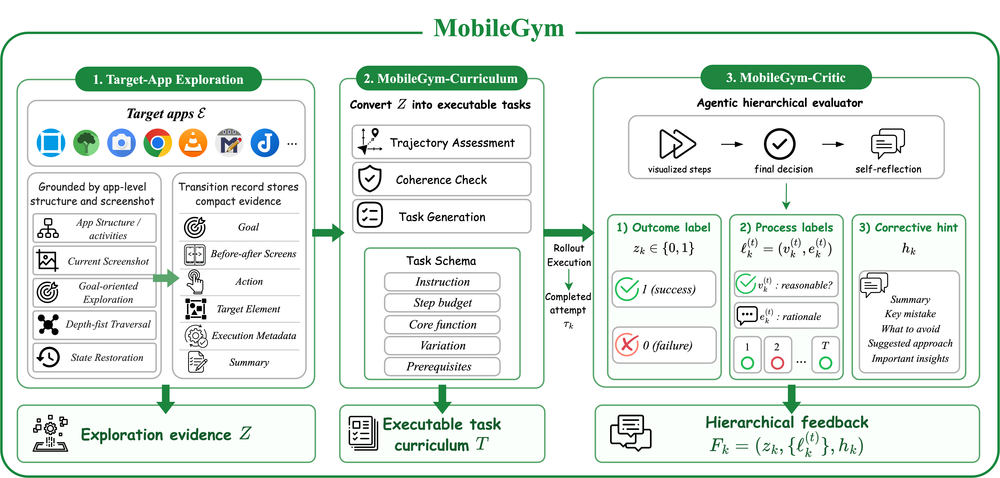
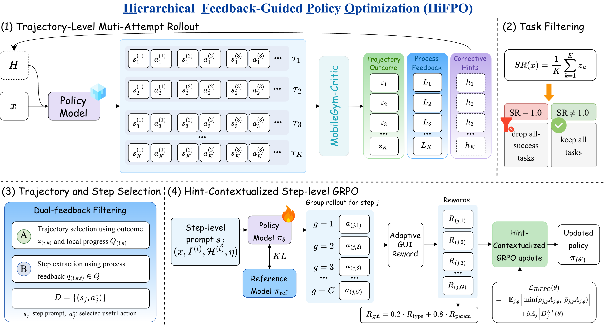
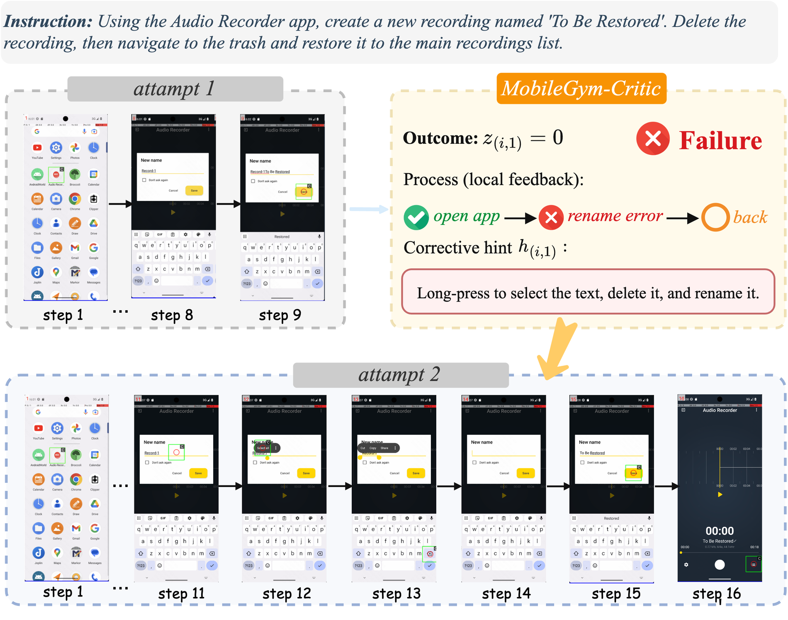

AndroidWorld in-domain adaptation with the MobileForge-adapted GUI-Owl-1.5-8B model.
Core Idea
Annotation-free adaptation from real app interaction.
MobileForge targets two gaps in mobile GUI learning: generated tasks and feedback are often detached from the target app, while sparse rollout outcomes are hard to turn into reusable step-level policy updates.

Results
Main performance of MobileForge.

Strong AndroidWorld multi-attempt success after annotation-free adaptation.
Out-of-domain GUI-only success with no MobileWorld rollout used for training.
Qwen3-VL-8B after MobileForge adaptation, close to the closed-data GUI-specialized base model.
Method
MobileGym grounds experience; HiFPO turns feedback into updates.


MobileGym
A unified mobile substrate that mines executable tasks from app interaction traces and evaluates completed rollouts with outcome labels, process feedback, and corrective hints.

HiFPO
A feedback-guided optimization loop that reuses hints across attempts, filters mastered tasks and noisy steps, and trains on hint-contextualized step-level GRPO samples.
Open Release
Artifacts for reproducing annotation-free adaptation.
CodeExploration, rollout, training, evaluation, and release manifests for the MobileForge pipeline.
ModelsForgeQwen3 and ForgeOwl checkpoints adapted from automatically generated MobileForge tasks.
DatasetsGenerated tasks, exploration trajectories, training data, and benchmark artifacts grouped in one HF collection.
ResultsAndroidWorld and MobileWorld evaluation archives with public model-to-result mappings.

Hierarchical Feedback
Making rollout feedback reusable.
MobileGym-Critic separates final task outcome, step-level process quality, and corrective hints. HiFPO uses these signals to keep informative experience, discard mastered tasks, and condition GRPO on feedback from earlier attempts.
Citation
Cite MobileForge
@article{liu2026mobileforge,
title={MobileForge: Annotation-Free Adaptation for Mobile GUI Agents with Hierarchical Feedback-Guided Policy Optimization},
author={Liu, Guangyi and Zhao, Pengxiang and Wu, Gao and Yin, Yiwen and Li, Mading and Liu, Liang and Liu, Congxiao and Qi, Zhang and Wang, Mengyan and Guo, Liang and Liu, Yong},
journal={arXiv preprint arXiv:2606.19930},
year={2026}
}